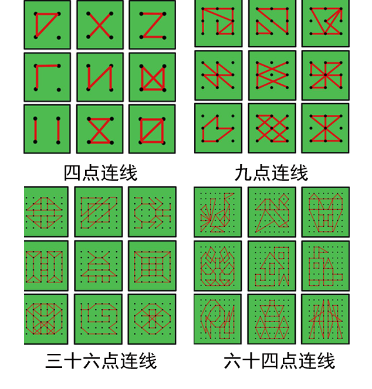

《蜗牛，飞吧》自闭症儿童学习系列软件之基础版 说明
《蜗牛，飞吧》系列软件，完全免费向家长及机构开放下载和使用，由美国福音信义会资助，青岛圣之爱康复中心携手青岛云瑞信息科技有限公司联合研发制作。本软件目前仅可用于安卓类手机或平板电脑，我们会根据家长、机构的需求，逐步开发出可用于其它操作系统的版本。
本款软件分为认知学习、点连线操作两大部分，操作，便捷、经济、可以重复使用，完全可以替代传统的纸质类的卡片、图画纸。其中的点连线部分分为：初级点连线、中级点连线和走出迷宫三个部分。
青岛圣之爱在2013年1月份专门成立了软件教师研发小组，组长刘妮妮，组员张海琳、高原、胡绪红、魏新华。该软件目前还处于试用阶段，未来会根据自闭症儿童的学习特点，开发出更多的免费软件，为自闭症家长、机构提供便利。
本软件动漫人物设计由青岛农业大学动漫与传媒学院毕新然、王泽平友情制作。
青岛圣之爱近年设置了“普小衔接班”，主要为有一定语言表达能力、社交能力的学龄前自闭症儿童开设，提前建立起他们的课堂规则意识、纪律性。为他们进入普通幼儿园和小学打好坚实基础。
点连线图例如下：

本款软件中的卡通人物及软件内容，版权人为青岛市城阳区圣之爱康复中心，请勿私自用于任何商业目的。
如果您在使用过程中存在任何疑问、意见或有更好的建议，敬请联系我们，您的批评指正，是本款软件更加完善的良好前提，是我们工作更加努力的最好动力。.
青岛市城阳区圣之爱康复中心
2014.4.30